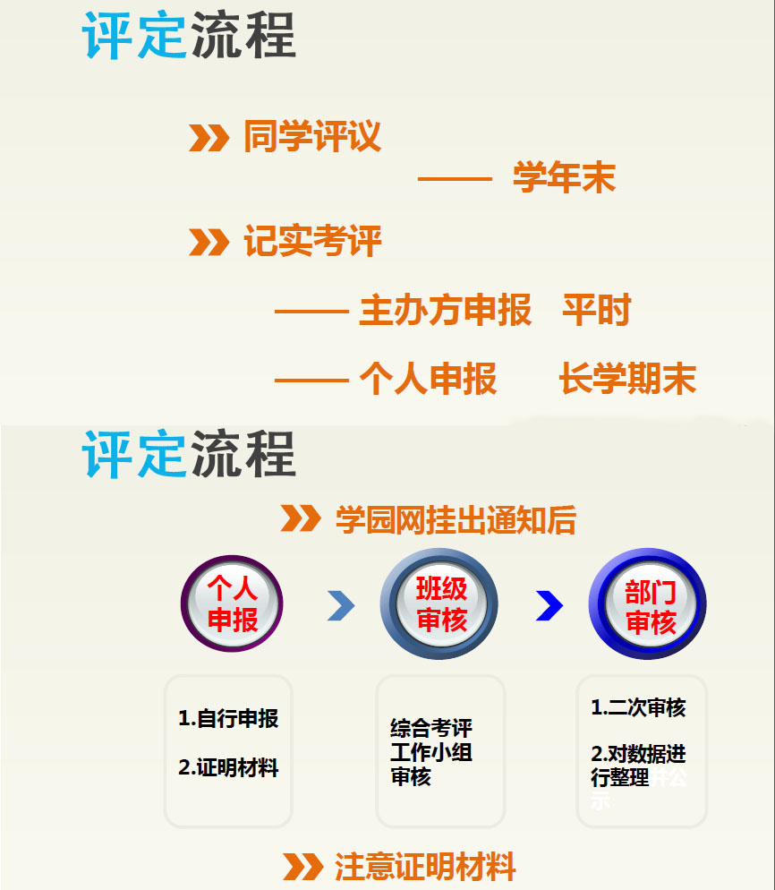
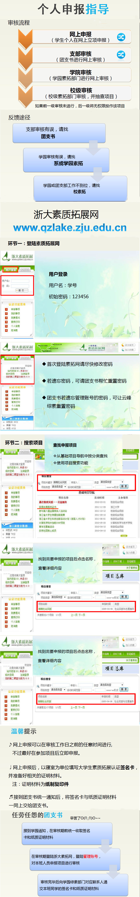

浙江大学的课外综素及素拓分为好几种，主要以综素和素质拓展（第二课堂）为主。
Part one：综素
整个综素评分分为加分项与扣分项，其中加分项包含有思想政治教育、社会工作、学术研究与创新活动、文体活动、社会实践及志愿者以及宿舍纪实及同学评议等。扣分项也有明确的规定。
每位同学在每个长学期末以及学年末都会参加综素评定。分为同学评议和纪实考评。每位同学的综素分数都得基于参加过活动的基础上并提供证明材料申请！然后经过班级审核→部门审核，最终在学园网或系网进行公示。

Part two：素质拓展
素质拓展也成为第二课堂，必须引起同学们的高度重视！根据《浙江大学本科生第二课堂学分管理办法》：第二课堂活动是指在课堂教学以外的时间,学生在教师指导下所进行的旨在加深基础知识,扩大知识领域,开扩视野,发展科技、文体、艺术等方面的兴趣和才能,培养独立工作和创造能力,提高思想品德和综合素质的实践创新活动。第二课堂活动是大学生学习成长的重要组成部分，是全面提升大学生综合素质的实践平台，是引导大学生树立新观念、增强自主发展动力的有效载体。
毕业需要4分，其中至少有0.5分须为社会实践项目（这个一般可以通过假期来达成，可以考虑红色参观、志愿者活动等；项目的质量与照片、稿子的质量存在一定的关系）。

鉴于第二课堂直接关系到能否顺利毕业这样的重要性，设有专门的校团委素质拓展认证中心职能部门。其加分申请也必须按照严格的形式进行。

Part three：四分攻略
一、优秀团员/优秀团干/优秀班干/优秀社团（核心）成员均有加分（0.5分起步），各级体育裁判证书（最高有1.5分），SQTP和SRTP一般成员3分立项人4分（PS若不完成的话各个学院学园会有不同的惩罚），还有通过志愿者小时数换星级证书得到二课分（40h-70h为0.5分；70h-150h为1分；150-200h为1.5分；200-250h为2分；250h以上为2.5分）一般靠这些项目足够得到4分。当然如果有什么体育爱好更好拿分，此外学工部网站的培训结业后有不少是有二课加分的（这个需要注意看学工部网站的通知）。
二、十八大学科竞赛和挑战杯蒲公英苗人算是浙大的品牌项目了，加分妥妥的福利多多的当然要求也不low。此外创新大物竞赛、各种知识竞赛、各类营销策划赛、创业策划赛、团支部风采大赛也有加分。
当然还有社团二课，不同学园/学院流程有细微区别（一般不推荐走这条路，比较耗费精力但同时也比较锻炼吧）。
三、PS：免检寝室是没有加分的，是个荣誉。